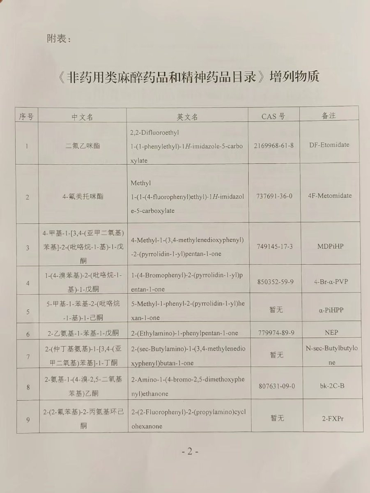
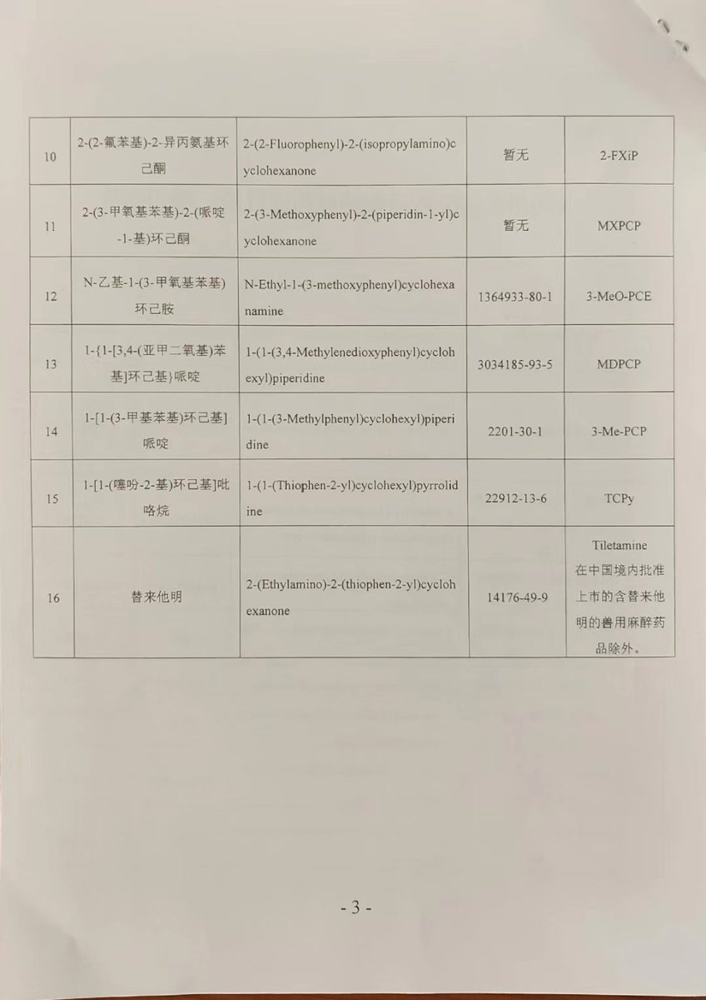

xx1012000456
@xx1012000456
@yaowubaike 这才哪到哪？回头我打算整理一份全列管表，再看看有哪些相似物


药物百科Mediwiki
@yaowubaike
今年 7.1 封神榜新鲜出炉
这次封印可以说除了替来他明 咪酯类
也把半个策划药圈封印了
其中还有老熟人 3-meo-pce
不是很意外 还是那句话
化学没有尽头 https://t.co/0hvljIRcqn